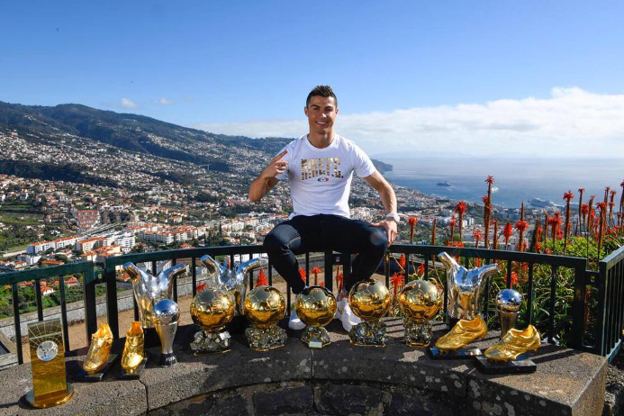

Cristiano Ronaldo’s glittering career is defined not just by the trophies he’s won with his clubs and country, but also by an incredible collection of individual honors that reflect his unmatched consistency and longevity at the top of world football. Over the past two decades, Ronaldo has set new benchmarks for professionalism, performance, and perseverance — and his personal accolades serve as a testament to his greatness.
Ronaldo has won the prestigious Ballon d’Or five times — in 2008, 2013, 2014, 2016, and 2017. Each of these wins represents a different chapter in his career, from his explosive rise at Manchester United to his record-breaking years at Real Madrid. His rivalry with Lionel Messi pushed both players to new heights, creating an era of football dominance never seen before.
He has also been named FIFA World Player of the Year / The Best FIFA Men’s Player three times — in 2008, 2016, and 2017. These awards highlight not just his scoring prowess, but also his influence, leadership, and ability to perform on the biggest stages under immense pressure.
Ronaldo’s hunger for goals earned him the European Golden Shoe four times — in 2007–08, 2010–11, 2013–14, and 2014–15. This award, given to Europe’s top scorer each season, demonstrates his consistency across multiple leagues and years. He remains the first player ever to win it four times.
In addition, he has been crowned UEFA Best Player in Europe three times (2014, 2016, 2017), a reflection of his dominance in the Champions League — a competition where he still holds the record for most goals in history, with over 140 strikes.
Ronaldo’s flair for spectacular goals also earned him the Puskás Award in 2009 for his stunning long-range strike against Porto while playing for Manchester United. Beyond the official trophies, Ronaldo’s name is written across record books: he’s the all-time leading scorer in UEFA competitions, the top scorer in the European Championships, and the highest-scoring international player in men’s football history.
Year after year, he has proven that greatness isn’t a one-time achievement but a lifelong pursuit. His dedication, discipline, and mentality have set him apart from almost every athlete in history. Cristiano Ronaldo’s individual awards are more than just trophies — they’re symbols of his journey from a small island in Madeira to becoming one of the greatest players the world has ever seen.